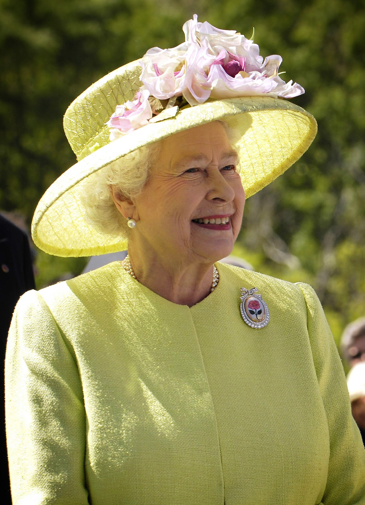

Queen Elizabeth II's Life
Queen Elizabeth was born on April 21, 1926 in London, England. Her Uncle was a king, but stepped down from the throne and it went to her father. She had became the heir to the throne in 1936. She would go on to attend Eton College. It wasn't until the summer of 1951, that the King George VI's health had started to decline. Elizabeth would continue to attend state occasions with her father. When her father had passed, it was a year later, February 6, 1952.
The first three months of her reign, she spent mourning her father. The queen's coronation was held on June 2nd 1953. She was the first british monarch to visit Australia(1953), New Zealand(1953), South America(1968) and Persion Gulf Countries(1979). In total Queen Elizabeth had 4 children with Prince Phillip, (now King)Prince Charles III, Princess Anne, Prince Andrew, and Prince Edward.
Queen Elizabeth had more than 30 Pembroke Welsh Corgis during her lifetime, and some Dorgis. Sometimes, in bad times she would breed her dogs to cheer herself up. An interest she had was enjoying nature and the countryside. She also liked horses and riding, and was in charge of many expensive and rare breeds.
On September 8th, 2022 at age of 96 years old she died peacefully in Balmoral Castle, United Kingdom. The throne was passed down to Prince Charles III.